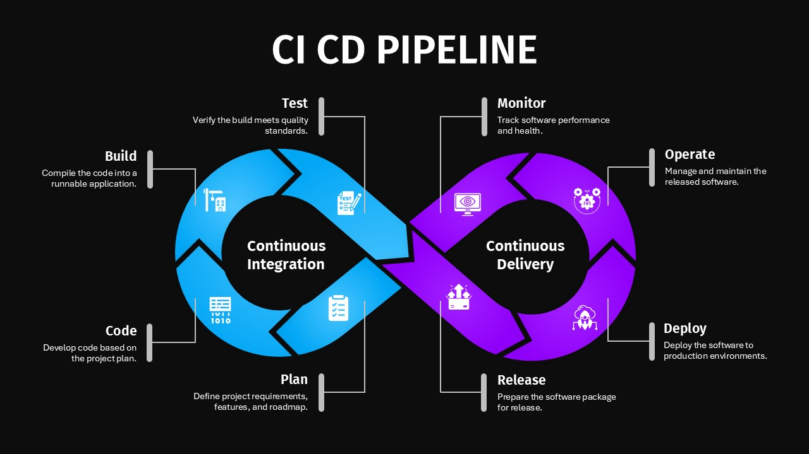
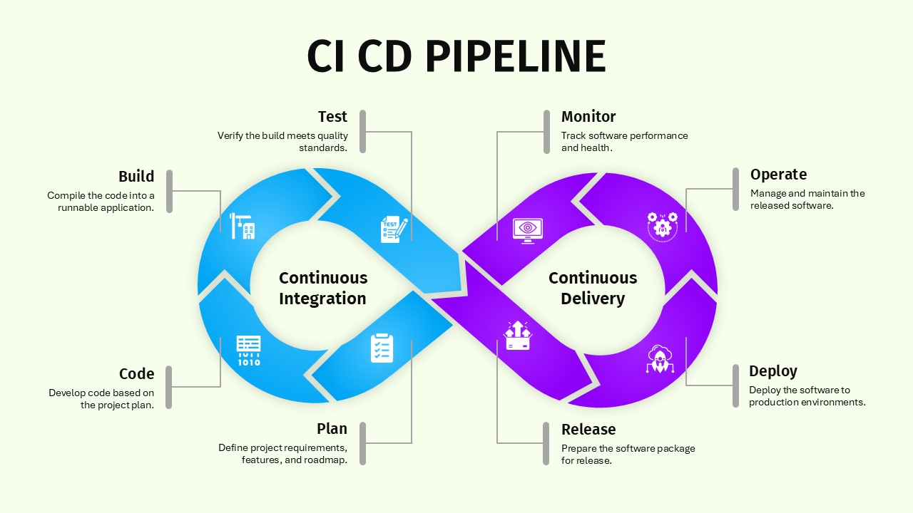

DevOps
Infrastructure as Code
Automating build, test, and release pipelines for reliable continuous delivery.
Architecting reliable cloud platforms, secure payment pipelines, and production-ready automation that moves services from idea to live faster.

Airpay Payment Services
Support Hives Technology LLP
Kubernetes, Docker, AWS, GCP, Terraform, Helm, Ansible
Prometheus, Grafana, ELK Stack, Zabbix
PCI-DSS, CSF, Fail2ban, WAF, Load Balancing
Automating build, test, and release pipelines for reliable continuous delivery.

Managing scalable cloud environments, autoscaling, and secure day-two operations.

Implementing metrics, alerts, and incident response practices for stable services.


Built repeatable deployment pipelines using GitHub Actions, Terraform, and Docker for safer, faster releases.

Designed resilient EKS clusters, secure networking, and autoscaling policies to support transaction-heavy services.

Implemented metrics, logs, and alerting for production stability so issues surface before they impact users.